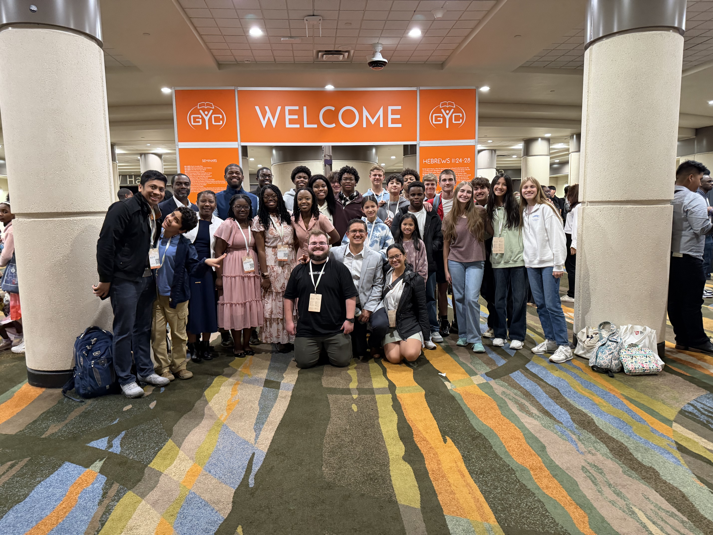

Connect.
Meals, games, and friendships that grow with time.
Young adults at Calhoun SDA Church

We meet to study the Bible, spend time together, and serve our church and community.
About the groupGod's Pantry · Calhoun SDA Church
1411 Rome Rd SW · Right-side entrance
The reason we gather
Jesus is at the center of our group. We study Scripture, keep the Sabbath, and look forward to His return.
Questions about the group? Email us ↗︎“And we know that in all things God works for the good of those who love him, who have been called according to his purpose.”Romans 8:28
Meals, games, and friendships that grow with time.
Study the Bible and learn to follow Jesus together.
Give our time and abilities to help others.
Coming up
Loading upcoming events…
Sabbath School meets Saturdays at 10 AM. No registration is needed.
Our community